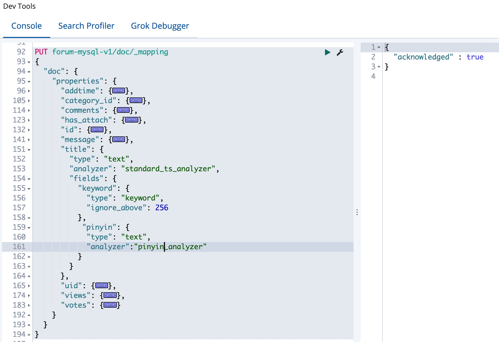
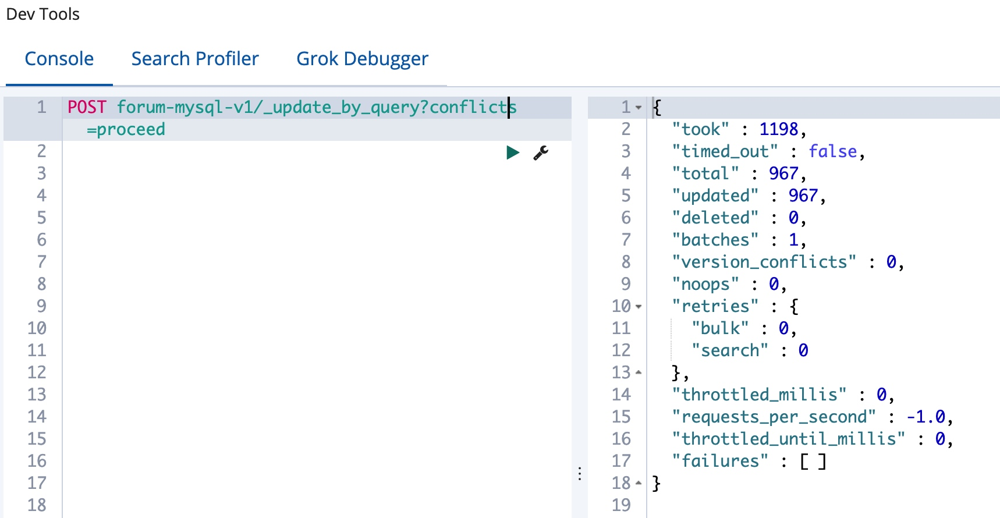
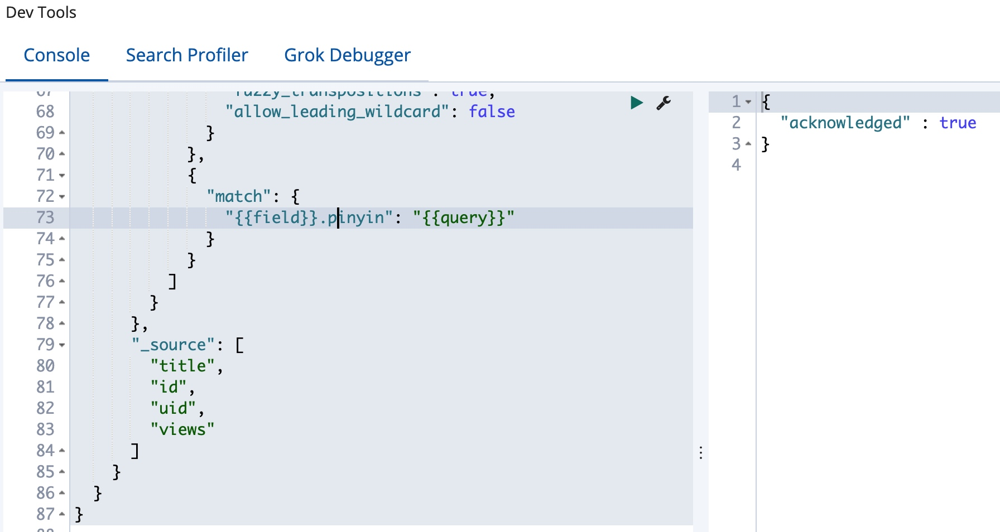
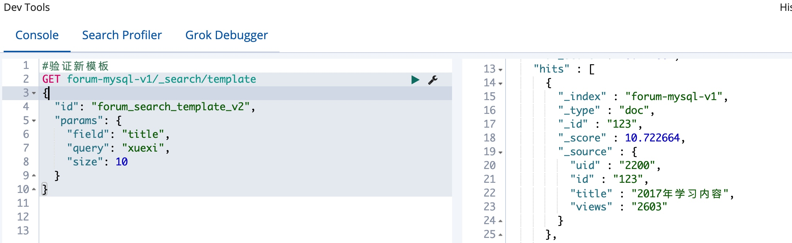

拼音处理
到目前为止，我们已经处理了查询，也处理了简繁体，接下来我们来看看如何处理拼音的需求。
拼音又叫汉语拼音（Hànyǔ Pīnyīn；英语：Chinese Pinyin、Hanyu Pinyin或Chinese Phonetic Alphabets）简称拼音（Pinyin），是中华人民共和国的汉字注音拉丁化方案，于1955年—1957年文字改革时被原中国文字改革委员会（现国家语言文字工作委员会）汉语拼音方案委员会研究制定。该拼音方案主要用于汉语普通话读音的标注，作为汉字的一种普通话音标。2012年10月1日，新汉语拼音正词法规则正式实施。
我们天生就是爱偷懒的，那个方便就用那个，比如输入法，早期的输入法非常难用，不管是全拼还是五笔都需要输入敲很多键才能得到我们需要的文本，五笔相对来说更加准确但是需要背字根，不过随着拼音教育的普及，以及拼音输入法的更加智能，拼音输入法后来居上，慢慢变成了主流输入法，我相信现在的年轻人应该很少会用五笔输入法了吧。
在一个搜索框里面，用户常常可能会因为打错字而输入成拼音字符或者只是会为了方便而输入拼音首字母缩写，因为这样打字最快，如果你也能够很好的支持这样的查询，那将会给用户带来意外的惊喜体验。
插件介绍
尽管 Elasticsearch 本身不提供拼音的处理，但是它的扩展性非常好，我们通过安装相应的插件即可扩展我们需要的功能，对应拼音的处理，我们完全可以在创建索引的时候，将中文转换成拼音存进索引，另外在查询的时候，也可以将中文转换成拼音进行索引的匹配。这里我给大家介绍一个我写好的一个拼音处理的插件，项目地址：https://github.com/medcl/elasticsearch-analysis-pinyin。
这个插件提供了3种不同类型的组件：
- 一个名为
pinyin的文本分析器 - 一个名为
pinyin的 Tokenizer - 一个名为
pinyin的 TokenFilter
并提供了一系列参数来支持自定义分词行为，主要的参数及详细说明如下：
| 参数 | 默认值 | 说明 |
|---|---|---|
| keep_first_letter | true | 将汉字转换成拼音并只保留各自的首字母，如：刘德华 -> ldh |
| keep_separate_first_letter | false | 将汉字转换成拼音并只保留各自的首字母，且将首字母独立分开，如：刘德华 -> [l,d,h] |
| keep_full_pinyin | true | 将汉字转换成拼音，并保留全拼，每个拼音独立分开，如：刘德华 -> [liu,de,hua] |
| none_chinese_pinyin_tokenize | true | 将不是汉字的拼音字母进行分词，用于对拼音输入进行分词，如：liudehua -> [liu,de,hua] |
| ignore_pinyin_offset | true | 是否忽略 offset 的位置处理，对于一个汉字转，如果存在多个转换形式，则会存在位置交叠，而在 6.0 以后，这种 offset 交叉是不允许的 |
这个拼音插件默认行为是同时保留拼音首字母和全拼，以一个例子说明如下：
GET /_analyze
{
"text": ["学习"],
"analyzer": "pinyin"
}
输出为：
{
"tokens" : [
{
"token" : "xue",
"start_offset" : 0,
"end_offset" : 0,
"type" : "word",
"position" : 0
},
{
"token" : "xi",
"start_offset" : 0,
"end_offset" : 0,
"type" : "word",
"position" : 1
},
{
"token" : "xx",
"start_offset" : 0,
"end_offset" : 0,
"type" : "word",
"position" : 1
}
]
}
从上面的输出可以看到，这个结果对于我们用来做智能提示已经足够了，尽管每个 term 的 offset 虽然都是 0，一般高亮会用到 offset，但是我们这里不需要使用 offset，因为我们的高亮都是在浏览器端的 Typeahead 来处理的，所以默认的行为已经满足我们的需求了。
同时，我们也看到产生了一个 xx 的首字母缩写的 term，为了提高召回率，我们还可以尝试开启一下参数 keep_separate_first_letter，这样单独的首字母也会作为索引，容错性更高，所以我们还需要进行一下自定义，我们自定义一个名为 my_pinyin 的 Tokenizer，开启拼音的转换属性，然后再自定义一个名为的 pinyin_analyzer 的 Analyzer，使用刚刚自定义的 Tokenizer。
功能集成
因为我们的索引 forum-mysql-v1 已经存在，并且已经有了数据，我们不能直接进行索引下面的 Analyzer setting 的修改，我们可以先关闭索引，然后修改设置完了之后再开启索引。完整的自定义的脚本如下：
POST forum-mysql-v1/_close
PUT forum-mysql-v1/_settings
{
"index": {
"analysis": {
"analyzer": {
"pinyin_analyzer": {
"tokenizer": "my_pinyin"
}
},
"tokenizer": {
"my_pinyin": {
"type": "pinyin",
"keep_first_letter": true,
"keep_separate_first_letter": true,
"keep_full_pinyin": true,
"keep_original": false,
"limit_first_letter_length": 16,
"lowercase": true
}
}
}
}
}
POST forum-mysql-v1/_open
还记得前面介绍过的 multi-field 数据结构么？这里要集成拼音的处理，我们还需要修改数据的 Mapping，我们添加一个新的子字段，我们添加一个 pinyin 字段，并设置Analyzer 为 pinyin_analyzer，具体修改如下：

可以看到，我们在现有的索引基础上新增了一个子字段，但是能不能修改已有字段的 Analyzer 呢，因为 Analyzer 的设置涉及到底层的数据结构，所以不是所有的 Mapping 信息都是可以动态修改的。
小知识
我们可以对现有索引的 Mapping 新增字段并指定新的 Analyzer，但是不能修改已有字段的 Analyzer。
我们对于一个已经存在的索引添加子字段是不会影响现有的数据的，所以尽管我们添加好了 title.pinyin 这个字段，但是我们现在还不能使用他，不过没有关系，我们原地进行一次重建就好了，也就是将当前索引的数据重新替换一下当前索引，一般用于 Mapping 的修改，我们可以很方便的使用 update_by_query 接口来实现，如下：

当然，我们也可以使用前面介绍的 reindex 接口来实现，不过 reindex 接口不支持来源和目的指定相同的索引，我们用 update 接口更加方便。使用 update 接口的时候，还可以添加过滤条件来选择要更新的数据范围，同时还能借助脚本来进行文档的修改，这里暂时不介绍。
我们现在就可以实时拼音查询了，试着搜索 xuexi，如下：

可以看到，可以正确找到跟 学习 相关的文档了。
更新查询模板
为了方便切换，我们创建一个新的查询模板 forum_search_template_v2，以和之前的搜索行为进行区分，并添加一个子查询，使用拼音字段，如下：

我们用新的查询模板来执行一下查询，如下：

因为我们修改了模板名，我们的 PHP 代码也需要进行调整，如下:

当然这一块模板名称的设置我们完全也可以做出后台可以动态调整的参数。
是时候检验工作成果的时候，我们切换到网站前台，到搜索框里面验证一下我们的改进成果，如下图：